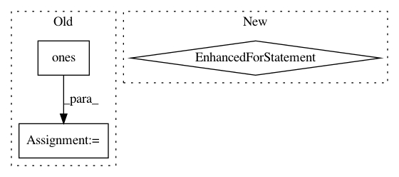

c60e2dfbdbb49b383b159fba7f46810c7dcbbf34,tests/auto/keras/layers/test_recurrent.py,,_runner,#Any#,10
Before Change
All the recurrent layers share the same interface, so we can run through them with a single
function.
for weights in [None, [np.ones((input_dim, output_dim))]]:
for ret_seq in [True, False]:
layer = layer_class(input_dim, output_dim, return_sequences=ret_seq, weights=weights)
layer.input = theano.shared(value=np.ones((nb_samples, timesteps, input_dim)))
config = layer.get_config()
for train in [True, False]:
out = layer.get_output(train).eval()
// Make sure the output has the desired shape
if ret_seq:
assert(out.shape == (nb_samples, timesteps, output_dim))
else:
assert(out.shape == (nb_samples, output_dim))
mask = layer.get_output_mask(train)
class TestRNNS(unittest.TestCase):
Test all the RNNs using a generic test runner function defined above.
After Change
All the recurrent layers share the same interface, so we can run through them with a single
function.
for ret_seq in [True, False]:
layer = layer_class(output_dim, return_sequences=ret_seq, weights=None, input_shape=(None, input_dim))
layer.input = theano.shared(value=np.ones((nb_samples, timesteps, input_dim)))
config = layer.get_config()
for train in [True, False]:
out = layer.get_output(train).eval()
// Make sure the output has the desired shape
if ret_seq:
assert(out.shape == (nb_samples, timesteps, output_dim))
else:
assert(out.shape == (nb_samples, output_dim))
mask = layer.get_output_mask(train)
class TestRNNS(unittest.TestCase):
Test all the RNNs using a generic test runner function defined above.
In pattern: SUPERPATTERN
Frequency: 3
Non-data size: 3
Instances
Project Name: keras-team/keras
Commit Name: c60e2dfbdbb49b383b159fba7f46810c7dcbbf34
Time: 2015-10-05
Author: makoto.matsuyama@gmx.com
File Name: tests/auto/keras/layers/test_recurrent.py
Class Name:
Method Name: _runner
Project Name: NifTK/NiftyNet
Commit Name: 5af1994def9a52fe1ffd2847b2519f1e27cfbc64
Time: 2017-08-12
Author: wenqi.li@ucl.ac.uk
File Name: niftynet/io/misc_io.py
Class Name:
Method Name: do_resampling
Project Name: keras-team/keras
Commit Name: 9d15c9611570bd3ecab52ed924c69a60ac3b2784
Time: 2016-01-03
Author: julien@fhtagn.net
File Name: tests/keras/layers/test_convolutional.py
Class Name:
Method Name: test_upsampling_2d